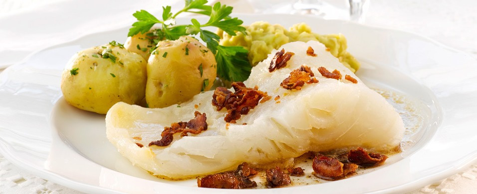

Lutefisk

Odin's favorite lye-cured cod. Mmmm...gelatinous!
Ingredients
Steps
Cure the cod in lye
- Add 2 tablespoons lye to a gallon of water.
- Soak cod in lye solution for 3 days.
- Soak cod in clear water for 4 days, changing the water every day.
- Soak the fish in water for 3 days.
Cook the lutefisk
- Tie cod loosely in cheese cloth.
- Drop in large pot of boiling water.
- Boil for 10 minutes.
- Remove cheese cloth package and debone fish.
- Serve with butter and aquavit!
Recipe from https://www.food.com/recipe/swedish-lutefisk-12617